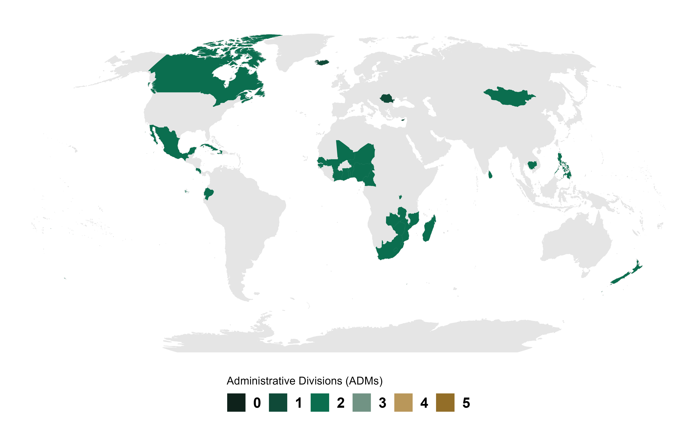

Skip to contents
rgeoboundaries
1.9.9.9000
Get started
Reference
Articles
gbOpen coverage and metadata
gbHumanitarian coverage and metadata
gbAuthoritative coverage and metadata
Changelog
gbAuthoritative coverage and metadata
Source:
vignettes/articles/x3_gbAuthoritative.Rmd
x3_gbAuthoritative.Rmd
gbAuthoritative coverage

gbAuthoritative metadata